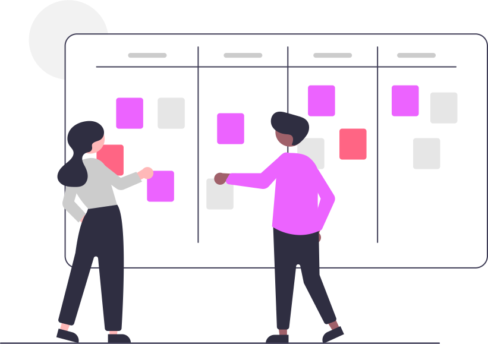

Bem-vindo à ONG CONNECT
Facilitamos a gestão de ONGs, conectando voluntários, doadores e causas.
Juntos, podemos fazer a diferença!
Nossas Funcionalidades Essenciais
Gerenciamento de Voluntários
Cadastre, organize e comunique-se com seus voluntários de forma intuitiva.
Rastreamento de Doações
Monitore doações recebidas e gere relatórios detalhados para transparência.
Calendário de Eventos
Planeje, divulgue e gerencie todos os eventos importantes da sua ONG.
Relatórios Personalizados
Gere análises de desempenho e dados para prestação de contas com facilidade.

Transforme Sua Gestão
Com a ONG CONNECT, sua organização ganha uma ferramenta poderosa para focar no que realmente importa
Conheça Nossos ProjetosFale Conosco
Tem dúvidas, sugestões ou quer agendar uma demonstração? Estamos prontos para ajudar sua ONG a prosperar.
suporte@ongconnect.com.br
📞 Telefone
(XX) 99999-9999
📍 Localização
Rua Exemplo, 123 - Cidade/UF